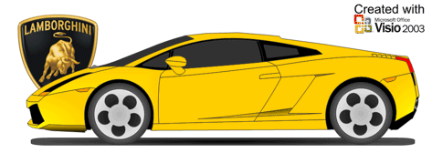
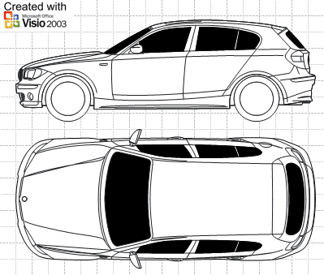
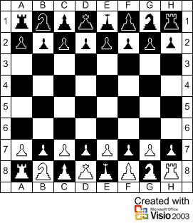
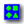
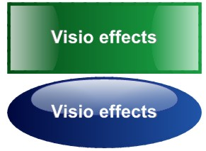
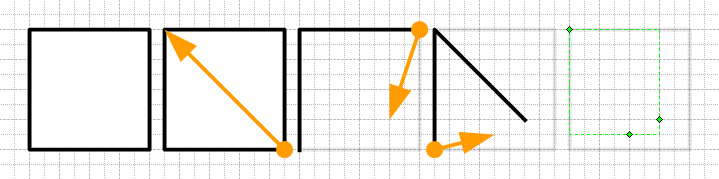
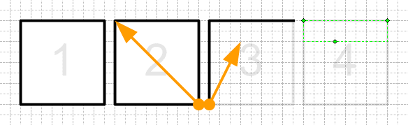
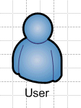
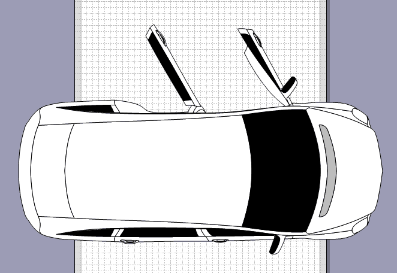

09.12.2005Эрик Роккей, Lead Program Manager по Visio, начал вести свой блог по Visio 12, в котором рассматриваются нововведения в программе, полезности и украшательства. :-)
Visio 12 - Eric Rockey (английский язык)
09.12.2005Мои скриншоты работы в Microsoft Office Visio 12 Beta.
27.11.2005Добавлена еще одна картинка на страницу "Работы".
18.11.2005Итак, первые скриншоты Visio 12 уже просочились в сеть.
Office 12 Pre-Beta Screenshot Gallery 9: Visio 12
17.11.2005Завершая автомобильную тему. Сколка с фоток дает все же искаженную фигуру. В мире 3D уже давно используют "синьки" (blueprints). По времени, все так же, в среднем 2 часа на 1 вид. А на полноценную модель в 3D уходит в среднем 8 часов. :-) Не у меня, конечно, но сам факт. Итак, выкладываю все машины в одном файле:
- Mercedes-Benz R500(Top);
- Mercedes-Benz SLR(Side-Top);
- Lamborghini Gallardo(Side-Top);
- BMW 1 series(Side-Top);
- BMW 5 series(Side).
Машины(RAR)
Машины(ZIP)
Вышел, вернее стал доступен Microsoft Office "12" pre-beta build 3111 в который, помимо обычных приложений включен Visio. Т.е. фактически Microsoft Office Visio 12 pre-beta.
Microsoft Releases Technical Beta of Office “12”
11.11.2005Добавлена статья "XML в Visio 2003"
15.10.2005Возвращаясь к автомобильной теме. Некоторые производители автомобилей совершенно нормально используют векторные чертежи в рекламных целях и после импорта совершенно нормально преобразуются в Visio фигуры. Так, к примеру, мне легко удалось "переместить" в Visio некоторые модели автомобилей компании BMW. Жаль, что Ferrari или Lamboghini так не поступают. :-) Хотя это легко исправить, но это уже совсем другая история.

Сайт BMW
Очередное приключение фигуры User Shape. На сей раз это Фантастическая четверка.
И шахматы за 5 минут.

Шахматы(ZIP)
Шахматы(RAR)
04.10.2005Добавлена статья "Растровые мультифигуры в Visio"
29.09.2005Вышел второй пакет обновлений для Microsoft Office Visio 2003.
Visio 2003 SP2
28.09.2005В отличии от Visio, в ArhiCAD, к примеру, можно было повертеть готовым планом помещения в 3D. Компания WideDimensions предлагает дополнение к Visio с такой же возможностью.
WiseDimensions
Интересно было бы попробовать. Некоторое время назад я пытался изобразить некоторое подобие 3D фигуры в Visio. Сама возможность реальна, но сделать её через ТаблицуФигур очень сложно.
3D-Box(ZIP)
3D-Box(RAR)
Эксперименты на тему стеклянных эффектов.

Glass(ZIP)
Glass(RAR)
23.09.2005В последнее время появилось много различных статей и блогов по Visio на различных языках. Помимо английского блога Mai-lan появились и уже значительное время существуют следующие блоги:
Mai-lan's Visio Blog (английский язык)
John... Visio MVP Blog (английский язык)
VisioJ Visio Blog (японский язык)
visGeek Visio Blog (японский язык)
Visio Monitor Blog (чешский язык)
Теперь о статьях:
Toggling Shapes in Visio: Special Deliverable #12 by Dan Brown
Серия статей Stupid Visio Tricks by Dan Brown
Automating Diagrams with Visio by Michael Angeles
Серия трафаретов:
IAbook templates
Баг Visio 2003 SP1? Возмите квадрат, перетащите точки как показано на рисунке и фигура исчезнет, если масштаб будет больше, чем 100%. Странно? Да, действительно. Баг?


В Visio 2003 есть такая фигура в трафаретах, называется User. Вот она:

Но она всего одна. Посмотри по другому на героев Матрицы, Звездных воин, Бэтмена и других приключений этой замечательной фигуры.
User Shapes(ZIP)
User Shapes(RAR)
20.09.2005Добавлена статья "Мебель своими руками в Visio 2003.
Некоторое время назад я нашел сайт www.visio-car.com. Сам сайт на одном из восточных языков, поэтому не очень все понятно. Из представленых скриншотов видно, что создатели этого сайта хотели сделать наглядные чертежи стоянок, ДТП и вроде чего-то ещё. Но пройдя в раздел Download и введя свой электронный адрес, появится возможность скачать модели машин в формате Visio. Трудно создать такую модель или нет? На самом деле примерно за 1-2 часа, при наличии фотографии соответствующего ракурса. Соответственно изучив метод построения я сам сделал пару моделей Mercedes.
Visio-Car
Mercedes

15.09.2005Первые скриншоты Microsoft Office 12 уже появились в сети. Первое что бросается в глаза, существенно переработанный интерфейс программы.
Microsoft News
Microsoft Office 12 screenshots
09.09.2005На Microsoft Office Visio Conference 2006, который состоится 19 и 20 января 2006 года, впервые будет показан Visio "12". Возможно после него появятся первые скриншоты программы. Будем ждать.
Microsoft Office Visio Conference 2006
25.07.2005Давно использую ГОСТовские шрифты компании ASCON и соответственно символьный шрифт их же. Но решил сделать сам на их основе свой ГОСТовский шрифт, некоторый симбиоз, в полном соответствии с моим видением шрифта: шрифт должен содержать минимум точек на символ (над этим пока работаю); символы должны находиться в своих юникодовских таблицах; шрифт должен содержать нормальный дефис, тире и минус; иметь все начертания и быть максимально содержательным, т.е. полностью перекрывать символьный шрифт.
Так как это первый шрифт Тип А, и ввиду его пока еще сырости, рассматривается как тестовый.
Итак, шрифт содержит таблицы: основной латинской, кириллической, греческой, римские цифры, дефис, тире, минус, знак диаметра, знак плюс-минус и еще некоторые символы технической и математической и др.
В дальнейшем предполагается сделать полный ГОСТ А шрифт (из 4-6 начертаний) и полный ГОСТ Б шрифт (их 4-х начертаний) с полной совместимостью с Microsoft Visio и форматом PDF.
Ввиду сложностей и нагромождении всяких разных ГОСТовских шрифтов предлагается сделать один единственный комплект шрифтов исключительно для Visio. Т.к. ASCON'овские были сделаны, как известно, для Компаса.
Шрифт.
18.07.2005В раздел "Русификация" добавлен русификатор для Microsoft Visio 2002 SP-2 и Microsoft Visio for Enterprise Architects SP-2 (10.0.5110).
12.07.2005Добавлена статья "Вопросы стабильности и испорченные файлы в Visio 2003.".
В начало сайта Автор: Ничков Алексей (Digitall)